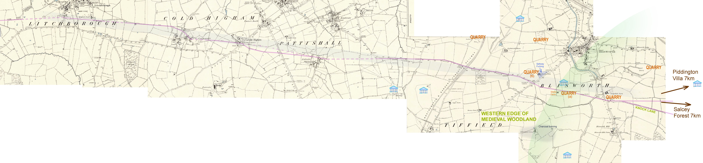

Soľná cesta (tiež známa ako soľná obchodná cesta) sa týka ktorejkoľvek prehistorickej a historickej obchodnej cesty, ktorou sa soľ prepravovala do regiónov, kde chýbala.
Vo Veľkej Británii vedie starodávna cesta známa ako Salt Way z Droitwich Spa, ktorá vedie okolo Banbury a vedie na Princes Risborough.
Soľná cesta mohla byť súčasťou hlavnej siete obchodných ciest z Droitwichu na juhovýchod. Na prepravu soli z doby železnej a počas celého rímskeho a stredovekého obdobia sa používali soľné cesty.
Salt Way je považovaná za jednu z niekoľkých „soľných ciest“ vyžarujúcich z Droitwichu v Midlands. Soľ sa tam prirodzene javí ako soľanka, bublajúca zo zeme v koncentrácii dvadsaťkrát silnejšej ako morská voda. Výsledkom je po uvarení vody oveľa lacnejšia, čistejšia a žiadanejšia soľ - hodnotná a všeobecne potrebná komodita.
Obchod so soľou sa datuje do doby železnej. Predstavte si hlboko zalesnený anglický vidiek bez poriadnych ciest, kde sa tovar prepravoval hlavne na koni alebo na voze - Salt Ways sa stali dôležitými obchodnými cestami.
Roman Droitwich bol známy ako „Salinae“, čo znamená „soľná dielňa“. Rimania dokonca platili svojim vojakom soľ. Anglosasi nazývali tieto soľné cesty ako „saeltské úžiny“. Priemysel ťažby a varenia soľanky, ktorý založili Rimania, prekvital v stredoveku a bol dobre zdokumentovaný v knihe Domesday Book.